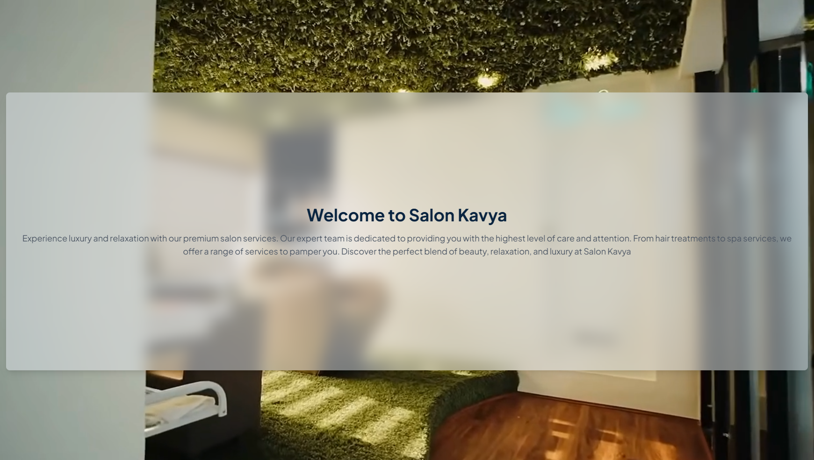
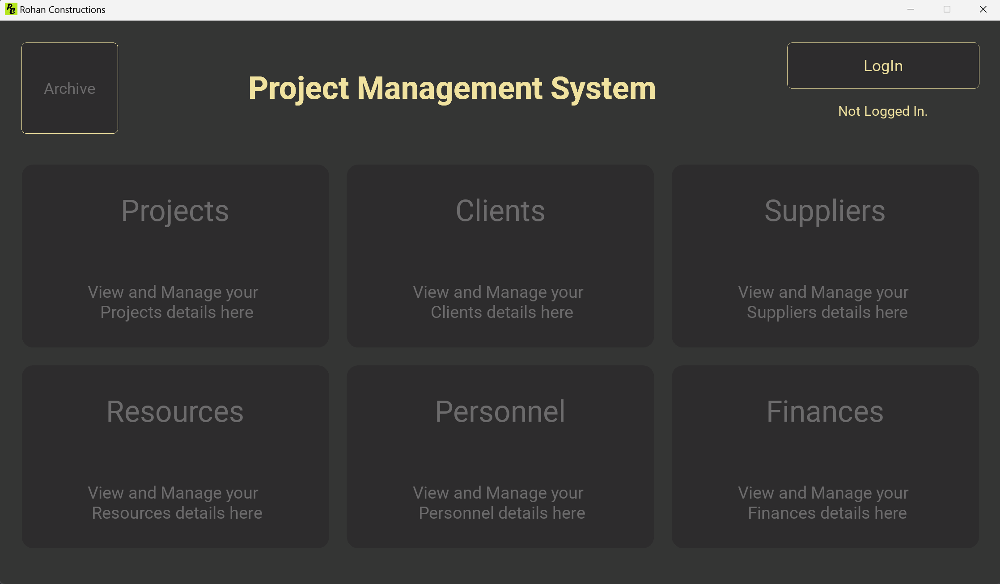
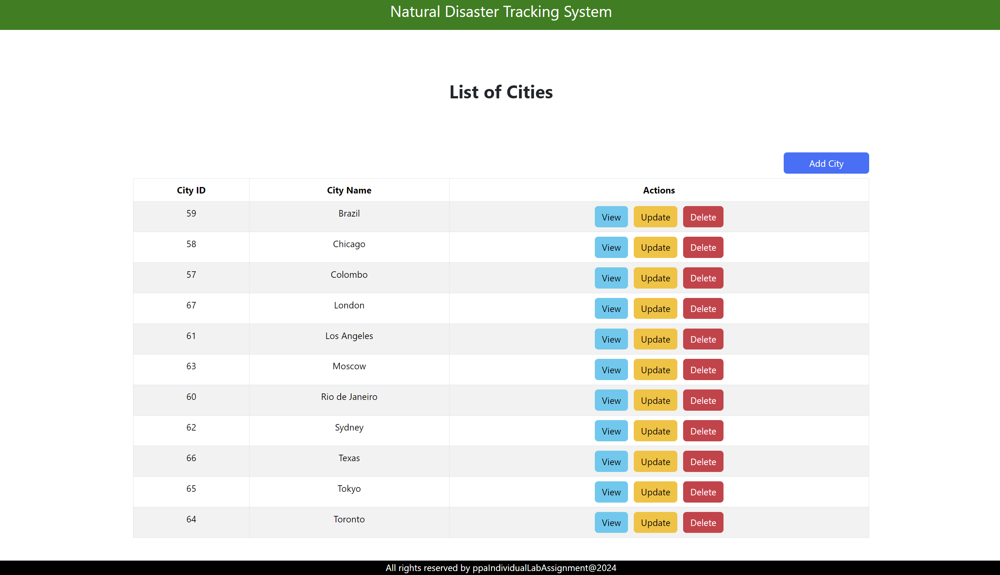
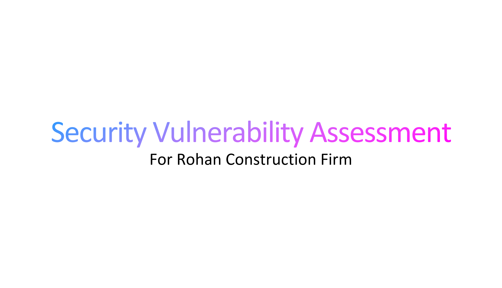
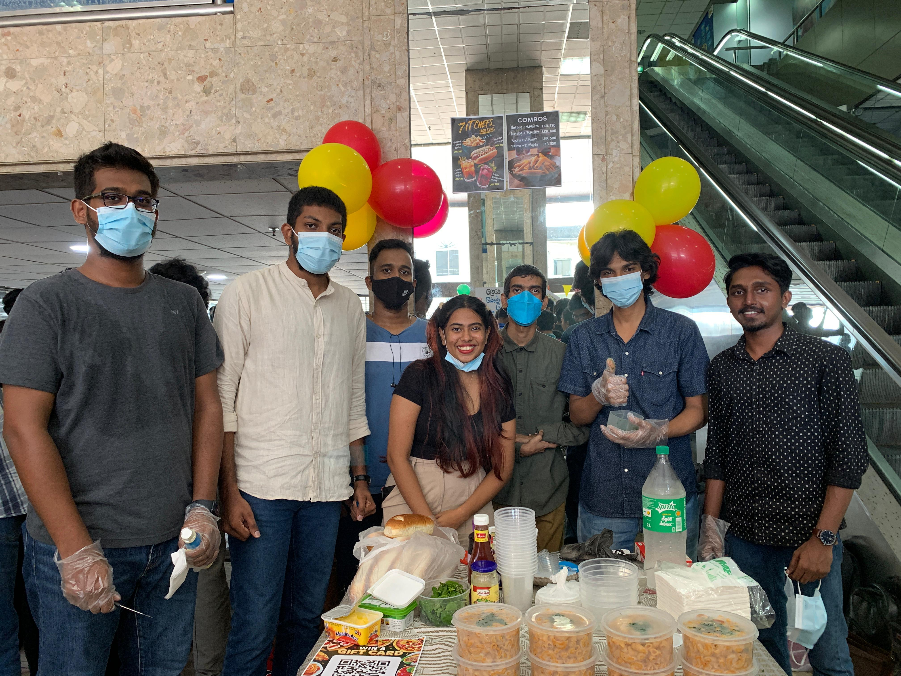

August, 2025
Brain Tumor Detection Application

As part of an academic project, my team and I developed a Brain Tumor Detection Application focused on early and accurate
identification of brain tumors using deep learning techniques. Built using Python Flask for the backend and leveraging the
VGG16 pre-trained convolutional neural network model, the system achieved an impressive accuracy of approximately 97%.
While the project was intentionally designed to be simple and not overly complex, it effectively demonstrates the potential
of AI-assisted medical diagnosis. The dataset used for model training and testing was sourced from Kaggle, ensuring
compliance with data privacy laws and ethical standards by avoiding the use of real patient-identifiable data.
My role involved integrating the machine learning model with a functional web application, facilitating a user-friendly
interface for medical professionals or researchers to upload and analyze MRI scans. Throughout the development process,
we maintained a focus on responsible AI practices and system usability.This project sharpened my skills in machine
learning integration, web development using Flask and ethical data usage in healthcare-related applications.
April, 2025
Stock Market Prediction Application
In this project, my team and I developed a Stock Market Prediction Application that leverages real-time social media sentiment and historical financial data to
forecast market trends. The core of the system uses sentiments extracted from posts on X (formerly known as Twitter), enabling the model to factor in public opinion
and market sentiment alongside technical indicators.
We built a custom web scraper to collect relevant tweets and used Google Cloud Console, Firebase and Firebase Authentication for secure data storage, user management
and backend services. Stock price data was retrieved via Google Finance, ensuring reliable and up-to-date financial metrics. To enhance accuracy, we employed a
dual-model architecture—two separate LSTM models: one dedicated to sentiment analysis and the other to stock price prediction. This separation allowed us to better
specialize and optimize each model for its specific task, leading to more refined predictions. Both models achieved approximately 85% accuracy.
The results were displayed on a personalized dashboard built using Python Streamlit, offering users a clear and interactive interface to view predictions,
sentiment trends, and historical data insights. The entire backend was powered by Python, and we fully leveraged Google’s cloud ecosystem, including Google Drive
for auxiliary data handling and storage.
This project deepened my understanding of machine learning in financial contexts, cloud-based application development and the importance of combining sentiment
analysis with technical data for real-world forecasting solutions.
April, 2025
Booking Management System for Salon Kavya

For this project, my team and I developed a comprehensive Portfolio and Booking Management System tailored specifically for Salon Kavya. The system included
a sleek and responsive portfolio website, an integrated booking engine with SMS notification alerts, a full-featured admin panel for managing appointments and
an AI-powered chatbot to assist users with common queries and service information.
We used Next.js for front-end development and deployed the application on Vercel, ensuring high performance, scalability and a smooth user experience. The admin
panel allowed Salon Kavya to manage appointments efficiently, while the real-time SMS alerts improved customer engagement and reduced missed appointments.
Throughout the project, we followed the Agile Scrum methodology, conducting regular sprint reviews and stand-up meetings to ensure transparency and timely delivery.
This experience enhanced my proficiency in modern web development frameworks, agile project management and the integration of AI services into real-world applications,
all while working closely with a real client to meet business goals.
April, 2024
Project Management System

For our university project, my team and I successfully developed a Streamlined Project Management System tailored
specifically for Rohan Construction Firm in Kandana, Sri Lanka. In my role as the Business Analyst, I was responsible
for gathering and analyzing the requirements from stakeholders, ensuring that the system met their needs and expectations.
I facilitated communication between the development team and the firm, translating technical concepts into business terms to
ensure alignment.
Utilizing Python as the core programming language and leveraging Google Firebase for a secure, scalable and convenient
database solution, we created a system that adheres to industry standards for reliability and performance. Throughout the
development process, I contributed to defining the project scope, creating user stories and developing functional specifications.
I also assisted in user acceptance testing to ensure the system met the required specifications.
We collaborated efficiently using Git for version control, ensuring seamless teamwork and adherence to best practices.
The system is now fully operational and has enabled Rohan Construction Firm to run 30% more effectively and efficiently.
My involvement in this project has honed my skills in requirements analysis, stakeholder management and project documentation,
showcasing my ability to bridge the gap between technical and business domains.
March, 2024
Natural Disaster Tracking System

During my second year of university, I independently developed a small-scale Natural Disaster Tracking System as part of an
assignment, utilizing predefined parameters to detect and manage disaster data (CRUD functionality). In this project, my role
was a Full Stack Developer, gaining hands-on experience with a diverse range of technologies. I utilized Spring Boot for backend
development and MySQL Database for effective data management, while React.js was employed for the frontend to create a dynamic
user interface.
I worked with tools such as IntelliJ IDEA and Visual Studio Code for development and utilized Bootstrap CSS and JavaScript to
enhance the user experience. To manage project dependencies, I utilized the NPM Package Manager. Additionally, I integrated
external data using the OpenWeatherMap API and conducted thorough testing of API endpoints via Postman, employing Axios for
efficient HTTP requests. This individual project not only strengthened my skills in full-stack development but also provided me
with valuable insights into API integration and the overall development lifecycle.
April, 2024
Security Vulnerability Assessment

As part of our Computer Security module, my team and I conducted a comprehensive Security Vulnerability Assessment for Rohan
Construction Firm in Kandana, Sri Lanka. In my roles as Team Lead, Risk Management Specialist and Documentation Specialist,
I played a pivotal role in overseeing the assessment process and ensuring effective communication among team members.
During this assessment, we identified several critical vulnerabilities in their existing system, including the potential
for Injection Attacks targeting the database, insufficient logging and monitoring, weak login controls and risks associated
with social engineering and tailgating. I led the team in analyzing these vulnerabilities and proposed both short-term and
long-term remediations designed to improve the security of their system against intruders and attackers.
As the Risk Management Specialist, I evaluated the potential impact of these vulnerabilities and prioritized remediation
efforts to mitigate risks effectively. Additionally, I took responsibility for documenting our findings and recommendations,
ensuring that all assessment details were clearly recorded for future reference and compliance. This project not only enhanced
my knowledge of cybersecurity practices but also reinforced the importance of proactive measures in safeguarding information
systems, while honing my leadership, risk assessment and documentation skills.
May, 2024
Strategic Financial Management Workshop

As part of a one-day entrepreneurial assignment at SLIIT CITY UNI, my team and I launched a food stall serving hot dogs, pasta
and mojitos to the university community. In my roles as Project Leader, Financial Analyst and Operations Manager, I was
influential in guiding the project from concept to execution, ensuring efficient operations and effective team collaboration.
During this initiative, we developed a diverse menu and conducted market research to identify popular trends and pricing strategies.
I led the financial planning process, creating a comprehensive budget that encompassed startup costs, operational expenses and projected
revenue. Our efforts paid off with a remarkable profit of LKR 15,000 within just one day of sales, highlighting our successful strategy and execution.
As Operations Manager, I oversaw the procurement of supplies and managed vendor relationships to maximize profitability. I also implemented marketing
strategies that included social media promotion and on-campus advertising, significantly increasing our visibility and customer engagement. This experience
not only enhanced my financial management and operational skills but also reinforced the importance of strategic planning and adaptability in a fast-paced
business environment.

{kind=link}
{kind=link}
{kind=link}
{kind=link}